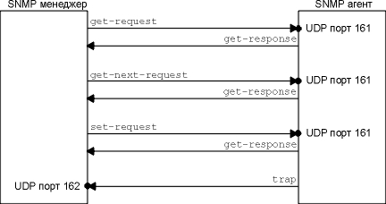
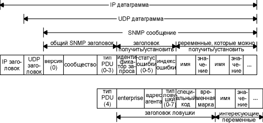
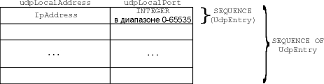
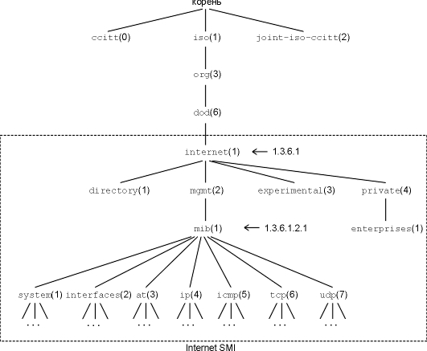
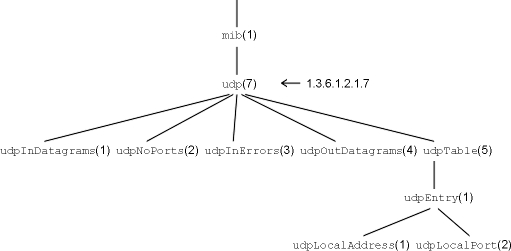
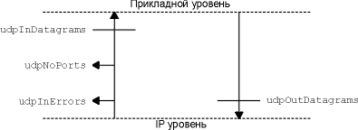
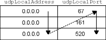
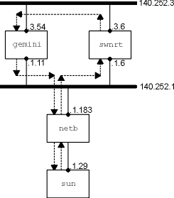

Так как количество сетей растет, сети разнообразным образом объединяются (маршрутизаторы различных поставщиков, хосты со встроенными функциями маршрутизации, терминальные серверы и так далее), задача управления этими системами становится очень важной. В этой главе рассматриваются стандарты, которые используются внутри семейства протоколов Internet, для управления сетью.
Управление сетью в объединенных сетях TCP/IP строится на взаимодействии между станцией управления сетью (менеджер) и элементами сети. Элементами сети могут быть любые объекты, которые используют семейство протоколов TCP/IP: хосты, маршрутизаторы, X терминалы, терминальные сервера, принтеры и так далее. На элементах сети должно быть запущено программное обеспечение, которое называется агентом.
Станции управления это обычно рабочие станции с цветным монитором и графическим дисплеем, которые отображают то, что происходит с элементами (которые из них работают, а которые нет, объем траффика по различным каналам за единицу времени и так далее).
Обмен данными, как правило, двусторонний: менеджер просит агента сообщить ему определенное значение (например, "сколько было сгенерировано ICMP ошибок о недоступности порта?"), или агент сообщает менеджеру о каком-либо важном событии ("подключенный интерфейс не работает"). У менеджера должна быть возможность установить переменные в агенте ("измени значение TTL по умолчанию на 64"), помимо того, что менеджер должен иметь возможность считывать переменные от агента.
Управление сетями TCP/IP состоит из трех частей.
Эти RFC определяют то, что в настоящее время называется SNMPv1, или просто SNMP, что мы и обсудим в этой главе. В течение 1993 года были опубликованы дополнительные RFC, которые описывают SNMP Version 2 (SNMPv2), который мы опишем в разделе "SNMP версии 2" этой главы.
В этой главе мы рассмотрим протокол, который используется для общения между менеджером и клиентом, во-первых, а затем посмотрим какие переменные использует агент. Мы опишем информационную базу данных, поддерживаемую агентом (MIB), рассмотрим группы, которые мы уже описали в тексте: IP, UDP, TCP и так далее. Рассмотрим примеры, соответствующие каждому описанию, а в процессе рассмотрения будем обращаться к концепции протоколов, описанных в предыдущих главах.
SNMP определяет всего пять типов сообщений, которыми обмениваются менеджер и клиент.
Получить значение одной или нескольких переменных: оператор get-request. Получить следующую переменную после этой или несколько указанных переменных: оператор get-next-request. (Мы опишем то, что имеем в виду под словом "следующий" позже в этой главе.) Установить значение одной или нескольких переменных: оператор set-request. Выдать значение одной или нескольких переменных: оператор get-response. Это сообщение возвращается агентом менеджеру в ответ на операторы get-request, get-next-request и set-request. Уведомить менеджера, когда что-либо произошло с агентом: оператор trap.
Первые три сообщения отправляются от менеджера к агенту, а последние два от агента к менеджеру. (Мы будем называть первые три оператора как get, get-next и set.) На рисунке 25.1 приведены все пять операторов.
Так как четыре из пяти SNMP сообщений реализуются простой последовательностью запрос-отклик (менеджер отправляет запрос, а агент возвращает отклик), SNMP используют UDP. Это означает, что запрос от менеджера может не прибыть к агенту, а отклик от агента может не прибыть к менеджеру. В этом случае менеджер, возможно, отработает тайм-аут и осуществит повторную передачу.

Рисунок 25.1 Пять операторов SNMP.
Менеджер отправляет эти три запроса на UDP порт 161. Агент отправляет ловушки (trap) на UDP порт 162. Так как используются два разных порта, одна система может выступать в роли менеджера и агента одновременно. (См. упражнение 1 в конце главы.)
На рисунке 25.2 показан формат пяти SNMP сообщений, инкапсулированных в UDP датаграмму.

Рисунок 25.2 Формат пяти SNMP сообщений.
На этом рисунке мы указали в байтах только размер IP и UDP заголовков. Это объясняется тем, что для SNMP сообщений используется кодирование - называемое ASN.1 и BER, которые мы опишем позже в этой главе - в зависимости от типа переменных и их значений.
Значение поля version равно 0. Это значение в действительности равно номеру версии минус единица. (Версия SNMP, которую мы описываем, называется SNMPv1.)
На рисунке 25.3 показано значение для типа блока данных протокола (PDU type). (PDU - это блок данных протокола - Protocol Data Unit, обычно называемый "пакет".)
|
PDU type |
Имя |
|
0 |
get-request |
|
1 |
get-next-request |
|
2 |
set-request |
|
3 |
get-response |
|
4 |
trap |
Рисунок 25.3 Типы PDU сообщений SNMP.
Сообщество (community) это строка символов, в которой содержится пароль в открытом виде. Пароль используется при общении между менеджером и агентом. Обычное значение - 6-символьная строка public.
В операторах get, get-next и set менеджер устанавливает идентификатор запроса (request ID), который возвращается агентом в сообщении get-response. Мы видели этот тип переменной в других UDP приложениях. (Вспомните поле идентификации (identification) DNS на рисунке 14.3 и поле идентификатора транзакции (transaction ID) на рисунке 16.2.) Это позволяет клиенту (менеджеру в данном случае) сопоставить отклики от сервера (агент) с запросами, которые были отправлены клиентом. Это поле также позволяет менеджеру выдать несколько запросов одному или нескольким агентам, а затем отсортировать полученные отклики.
Статус ошибки (error status) это целое число, которое возвращается агентам и указывает на ошибку. На рисунке 25.4 показаны значения, имена и описания ошибок.
|
статус ошибки |
Имя |
Описание |
|
0 |
noError |
все в порядке |
|
1 |
tooBig |
клиент не может поместить отклик в одно SNMP сообщение |
|
2 |
noSuchName |
оператор указывает на несуществующую переменную |
|
3 |
badValue |
в операции установки использовано недопустимое значение или сделана ошибка в синтаксисе |
|
4 |
readOnly |
менеджер попытался изменить переменную, которая помечена как "только для чтения" |
|
5 |
genErr |
неопознанная ошибка |
Рисунок 25.4 Значения статуса ошибки SNMP.
Если возникла ошибка, индекс ошибки (error index) это целое смещение, указывающее на то, в какой переменной произошла ошибка. Это значение устанавливается агентом только для ошибок noSuchName (нет такого имени), badValue (неверное значение) и readOnly (только для чтения).
Список имен переменных и значений следует в get, get-next и set запросах. Раздел значений игнорируется в операторах get и get-next.
Для оператора trap (PDU type равен 4) формат SNMP сообщения изменяется. Мы опишем поля заголовка ловушки, когда будем описывать этот оператор в разделе "Ловушки" этой главы.
Структура управляющей информации
SNMP использует небольшое количество различных типов данных. В этой главе мы рассмотрим эти типы, однако не будем рассматривать то, как эти данные в действительности кодируются (для хранения данных используются битовые шаблоны).

Рисунок 25.5 Таблица listener UDP (udpTable), которая представлена как двумерный массив SNMP.
Количество строк в этой таблице не определяется SNMP, однако мы увидим, что менеджер, используя оператор get-next (раздел "Простые примеры" этой главы), может определить, что получена последняя строка таблицы. Также, в разделе "Примеры идентификации" мы увидим, как менеджер указывает, какую строку таблицы он хочет получить или установить.
Идентификатор объекта - это тип данных, указывающий на полномочно названный объект. Под словом "полномочно" мы подразумеваем, что эти идентификаторы не назначаются случайным образом, а назначаются некоторыми организациями, которые несут ответственность за группу идентификаторов.
Идентификатор объекта это последовательность целых десятичных чисел, разделенных точками. Эти целые числа представляют собой древовидную структуру, напоминающую DNS (рисунок 14.1) или файловую систему Unix. В вершине, откуда начинается дерево идентификаторов объектов, существует корень без названия.
На рисунке 25.6 показана структура дерева. Все переменные в MIB начинаются с идентификатора объекта 1.3.6.1.2.1.
У каждого узла в дереве также существует текстовое имя. Имя, соответствующее идентификатору объекта 1.3.6.1.2.1, это iso.org.dod.internet.mgmt.mib. Подобная форма записи имен используется для удобства чтения. Имена переменных MIB используемые при обмене пакетами между менеджером и агентом (рисунок 25.2), это цифровые идентификаторы объектов, начинающиеся с 1.3.6.1.2.1.

Рисунок 25.6 Идентификаторы объектов в информационной базе управления.
Помимо идентификаторов объектов mib, приведенных на рисунке 25.6, мы также привели еще один iso.org.dod.internet.private.enterprises (1.3.5.1.4.1). В этом месте находится MIB различных производителей. В Assigned Numbers RFC приведен список около 400 идентификаторов, зарегистрированных ниже этого узла.
Введение в Информационную Базу Управления (MIB)
Информационная база управления (MIB - Management Information Base) это информационная база данных, которая обслуживается агентом, а менеджер может запросить информацию из этой базы или записать информацию в эту базу. Мы рассмотрим то, что называется MIB-II и описано в RFC 1213 [McCloghrie and Rose 1991].
Как показано на рисунке 25.6, MIB поделена на группы: system, interfaces, at (трансляция адресов), ip и так далее.
В этом разделе мы опишем только переменные, находящиеся в группе UDP. Это простая группа с небольшим количеством переменных и одной таблицей. В следующих разделах, на примере этой группы мы покажем, как осуществляется идентификация, построение лексикографического порядка и некоторые простые примеры этих характеристик. После чего, в разделе "Информационная база управления (продолжение)", мы вернемся к MIB и опишем некоторые другие группы в MIB.
На рисунке 25.6 мы показали группу под названием udp, находящуюся ниже mib. На рисунке 25.7 показана структура группы UDP.

Рисунок 25.7 Древовидная структура таблицы IP адресов.
Как мы говорили ранее, группа UDP содержит четыре переменные, и одну таблицу из двух переменных. На рисунке 25.8 приведены четыре переменные.
|
Имя |
Тип данных |
R/W |
Описание |
|
udpInDatagrams |
Counter |
|
Количество UDP датаграмм, доставленных пользовательским процессам. |
|
udpNoPorts |
Counter |
|
Количество доставленных UDP датаграмм, для которых не оказалось пользовательского процесса на порте назначения. |
|
udpInErrors |
Counter |
|
Количество недоставленных UDP датаграмм не по причине того, что на порте назначения не оказалось приложения (например, ошибка контрольной суммы UDP). |
|
udpOutDatagrams |
Counter |
|
Количество отправленных UDP датаграмм. |
Рисунок 25.8 Переменные в группе udp.
Мы будем использовать этот формат при описании всех переменных MIB в этой главе. Колонка, помеченная как "R/W", пуста, если переменная предназначена только для чтения или содержит точку (·), если переменную можно читать и записывать. Мы всегда будем включать эту колонку, даже если все переменные в группе только для чтения (как мы видели в группе udp), чтобы напомнить, что ни одна из переменных не может быть установлена менеджером. В случае если тип данных - INTEGER (целый) с ограничением, мы будем указывать верхний и нижний пределы, как сделано для номера порта UDP на следующем рисунке.
На рисунке 25.9 описываются две переменные в udpTable.
|
Таблица слушающего процесса (listener) UDP, index = <udpLocalAddress>.<udpLocalPort> | |||
|
Имя |
Тип данных |
R/W |
Описание |
|
udpLocalAddress |
IpAddress |
|
Локальный IP адрес слушающего процесса. 0.0.0.0 указывает, что слушающий процесс воспринимает датаграммы с любого интерфейса. |
|
udpLocalPort |
[0..65535] |
|
Локальный номер порта слушающего процесса. |
Рисунок 25.9 Переменные в udpTable.
Каждый раз, когда мы описываем переменные в SNMP таблице, первая строка рисунка содержит значение "index", используемое для обращения к каждой строке таблицы. Мы покажем некоторые примеры того, как это делается, в следующем разделе.
Диаграммы зависимостей
Здесь приводится взаимосвязь между первыми тремя счетчиками, описанными на рисунке 25.8. Диаграммы зависимостей [Case and Partridge 1989] иллюстрируют взаимосвязь между различными MIB переменными в заданной группе. На рисунке 25.10 показана диаграмма зависимостей для UDP группы.

Рисунок 25.10 Диаграмма зависимостей для группы UDP.
Эта диаграмма показывает, что количество UDP датаграмм, доставленных приложению (udpInDatagrams), можно получить как количество UDP датаграмм, доставленных от IP к UDP, минус udpInErrors, минус udpNoPorts. Количество UDP датаграмм, доставленных в IP (udpOutDatagrams), это количество, переданное в UDP от приложения. Можно сделать вывод, что udpInDatagrams не включает в себя udpInErrors или udpNoPorts.
Эти диаграммы были использованы в процессе разработки MIB, для проверки того, что все пути данных для пакета были учтены. [Rose 1994] показывает диаграммы зависимостей для всех групп в MIB.
Каждая переменная в MIB должна быть идентифицирована, когда SNMP обращается к ней, чтобы получить или установить ее значение. Во-первых, обращение осуществляется только к листовым узлам (листовой узел в древовидной структуре - любой самый удаленный элемент от корня). SNMP не работает с целыми рядами или колонками таблицы. Возвращаясь к рисунку 25.7, мы видим, что листовыми узлами дерева, являются те четыре, что мы описали на рисунке 25.8, и два на рисунке 25.9. Узлы mib, udp, udpTable и udpEntry не являются листовыми узлами.
На то, что эта переменная простая, указывает ".0", добавленный к идентификатору объекта переменной. Например, к счетчику udpInDatagrams показанному на рисунке 25.8, c идентификатором объекта 1.3.6.1.2.1.7.1, можно обратиться как 1.3.6.1.2.1.7.1.0. Текстовое имя при подобном обращении будет iso.org.dod.internet.mgmt.mib.udp.udpInDatagrams.0.
Однако обращения к этой переменной обычно делаются в сокращенном виде, udpInDatagrams.0, мы повторим, что name (имя) переменной, которое появляется в сообщении SNMP (рисунок 25.2), это идентификатор объекта 1.3.6.1.2.1.7.1.0.
Рассмотрим идентификацию пунктов таблицы более подробно. Давайте вернемся к таблице слушающего процесса UDP (рисунок 25.7).
Для каждой таблицы в MIB указан один или несколько индексов. Для таблицы слушающего процесса UDP, MIB определяет индекс как комбинацию двух переменных udpLocalAddress (локальный IP адрес) и udpLocalPort (локальный UDP порт), индекс в данном случае - целое число. (Мы показали этот индекс в верхней строке на рисунке 25.9.)
Представьте себе, что в таблице слушающего процесса UDP есть три строки: первая для IP адреса 0.0.0.0 и порта 67, вторая для 0.0.0.0 и порта 161 и третья для 0.0.0.0 и порта 520. На рисунке 25.11 показана эта таблица.
|
udpLocalAddress |
udpLocalPort |
|
0.0.0.0 |
67 |
|
0.0.0.0 |
161 |
|
0.0.0.0 |
520 |
Рисунок 25.11 Простая таблица слушающего процесса UDP.
Из таблицы видно, что система готова принимать UDP датаграммы с любого интерфейса для портов 67 (BOOTP сервер), 161 (SNMP) и 520 (RIP). К трем строкам в таблице можно обратиться, как показано на рисунке 25.12.
Порядок в MIB основан на расположении идентификаторов объектов. Все записи в MIB таблице расположены в лексикографическом порядке в соответствии с их идентификаторами объектов. Это означает, что шесть переменных, приведенных на рисунке 25.12, расставлены в MIB так, как это показано на рисунке 25.13. В результате можно декларировать два правила.
|
Строка (ряд) |
Идентификатор объекта |
Сокращенное имя |
Значение |
|
1 |
1.3.6.1.2.1.7.5.1.1.0.0.0.0.67 |
udpLocalAddress.0.0.0.0.67 |
0.0.0.0 |
|
2 |
1.3.6.1.2.1.7.5.1.1.0.0.0.0.161 |
udpLocalAddress.0.0.0.0.161 |
0.0.0.0 |
|
3 |
1.3.6.1.2.1.7.5.1.1.0.0.0.0.520 |
udpLocalAddress.0.0.0.0.520 |
0.0.0.0 |
Рисунок 25.12 Пример идентификации строк в таблице слушающего процесса UDP.
|
Колонка |
Идентификатор объекта (в лексикографическом порядке) |
Сокращенное имя |
Значение |
|
1 |
1.3.6.1.2.1.7.5.1.1.0.0.0.0.67 |
udpLocalAddress.0.0.0.0.67 |
0.0.0.0 |
|
2 |
1.3.6.1.2.1.7.5.1.2.0.0.0.0.67 |
udpLocalPort.0.0.0.0.67 |
67 |
Рисунок 25.13 Лексикографический порядок таблицы слушающего процесса UDP.
На рисунке 25.14 показан порядок колонка-строка для нашего примера таблицы слушающего процесса UDP.

Рисунок 25.14 Таблица слушающего процесса UDP, показанная в порядке колонка-ряд.
Мы еще увидим этот порядок колонка-строка, когда будем использовать оператор get-next в следующем разделе.
В этой главе мы покажем некоторые простые примеры того, как можно получить значения переменных от SNMP агента. Программное обеспечение, используемое для опроса агента, называется snmpi и взято из системы ISODE. Оба кратко описаны в [Rose 1994].
Простые переменные
Мы запрашиваем маршрутизатор на предмет двух простых переменных из UDP группы:
sun % snmpi -a gateway -c secret
snmpi> get udpInDatagrams.0 udpNoPorts.0
udpInDatagrams.0=616168 udpInDatagrams.0=616168
udpNoPorts.0=33
snmpi> quit
Опция -a указывает на агента, с которым мы хотим пообщаться, а опция -c указывает SNMP сообщество. Это пароль, устанавливаемый клиентом (snmpi в данном случае), и если сервер (агент на системе gateway) распознает имя сообщества, он ответит на запрос менеджера. Агент может позволить клиентам, принадлежащим к одному сообществу, только чтение своих переменных, а клиентам из другого сообщества чтение и запись.
Программа выводит приглашение snmpi>, после чего мы можем, например, ввести команду get, которая будет преобразована в SNMP сообщение get-request. Затем мы вводим quit. (Во всех следующих примерах последняя команда quit удалена.) На рисунке 25.15 показаны две строки вывода tcpdump для этого примера.
1 0.0 sun.1024 > gateway.161: GetRequest (42)
1.3.6.1.2.1.7.1.0 1.3.6.1.2.1.7.2.0
2 0.348875 (0.3489) gateway.161 > sun.1024: GetResponse (46)
1.3.6.1.2.1.7.1.0=616168
1.3.6.1.2.1.7.2.0=33
Рисунок 25.15 Вывод tcpdump для простого запроса SNMP.
Запрос о двух переменных посылается в одной UDP датаграмме, отклик также прибывает в одной UDP датаграмме.
Мы показали переменные в виде соответствующих им идентификаторов объектов, потому что именно это было отправлено в SNMP сообщениях. Мы должны были указать эти две переменные как 0. Обратите внимание на то, что в отклике всегда возвращается имя переменной (идентификатора объекта). Ниже мы увидим, что это необходимо для работы оператора get-next.
Оператор get-next
Функционирование оператора get-next основано на лексикографическом порядке MIB. Мы начнем следующий пример с запроса следующего идентификатора объекта после udp (не указывая объект, так как это не листовой объект). При этом будет возвращен первый объект группы UDP. Затем мы запросим следующую запись, будет возвращена вторая запись. И наконец, мы повторим это еще раз, чтобы получить третью запись:
sun % snmpi -a gateway -c secret
snmpi> next udp
udpInDatagrams.0=616318
snmpi> next udpInDatagrams.0
udpNoPorts.0=33
snmpi> next udpNoPorts.0
udpInErrors.0=0
Этот пример показывает, почему оператор get-next должен возвращать имя переменной: мы спрашиваем агента о следующей переменной, и агент возвращает ее имя и значение.
При использовании оператора get-next менеджер осуществляет циклический опрос всех переменных, поддерживаемых агентом (цикл стартует с начала MIB). Другое использование этого оператора - просмотр таблиц.
Мы можем убедиться в том, что таблица имеет организацию колонка-строка, воспользовавшись программой, которая отправляет запросы, для того чтобы пройти через таблицу слушающего процесса UDP. Мы начнем с того, что спросим следующую переменную после udpTable. Так как это не листовой объект, мы не можем указать объект, однако оператор get-next все равно возвращает следующий объект в таблице. Затем мы продолжим движение по таблице, так как агент возвращает следующую переменную, в соответствии с порядком столбец-строка:
sun % snmpi -a gateway -c secret
snmpi> next udpTable
udpLocalAddress.0.0.0.0.67=0.0.0.0
snmpi> next udpLocalAddress.0.0.0.0.67
udpLocalAddress.0.0.0.0.161=0.0.0.0
snmpi> next udpLocalAddress.0.0.0.0.161
udpLocalAddress.0.0.0.0.520=0.0.0.0
snmpi> next udpLocalAddress.0.0.0.0.520
udpLocalPort.0.0.0.0.67=67
snmpi> next udpLocalPort.0.0.0.0.67
udpLocalPort.0.0.0.0.161=161
snmpi> next udpLocalPort.0.0.0.0.161
udpLocalPort.0.0.0.0.520=520
snmpi> next udpLocalPort.0.0.0.0.520
snmpInPkts.0=59 здесь мы закончили просмотр таблицы слушающего процесса UDP
Мы видим, что порядок, возвращенный в данном примере, соответствует порядку, приведенному на рисунке 25.14.
Как менеджер может определить, что он достиг конца таблицы? Так как ответ на оператор get-next содержит имя следующего пункта в MIB после таблицы, менеджер может сказать, когда имя изменилось. В нашем примере последний пункт в таблице слушающего процесса UDP следует за переменной snmpInPkts.
Информационная база управления (продолжение)
А сейчас мы вернемся к описанию MIB. Опишем следующие группы: system (идентификация системы), if (интерфейсы), at (трансляция адресов), ip, icmp и tcp. Также определены дополнительные группы.
Группа system довольно проста; она состоит из семи простых переменных (таблиц в этой группе нет). На рисунке 25.16 приведены их имена, типы данных и описания.
|
Имя |
Тип данных |
R/W |
Описание |
|
sysDescr |
DisplayString |
|
Текстовое описание пункта. |
|
sysObjectID |
ObjectID |
|
Идентификатор поставщика в поддереве 1.3.6.1.4.1. |
|
sysUpTime |
TimeTicks |
|
Время в сотых долях секунд с того момента, когда часть системы, отвечающая за управление сетевое, была перестартована. |
|
sysContact |
DisplayString |
· |
Имя человека, к которому необходимо обратиться, и как его можно найти. |
|
sysName |
DisplayString |
· |
|
|
sysLocation |
DisplayString |
· |
Физическое расположение узла. |
|
sysServices |
[0..127] |
|
Значение, указывающее на то, какие сервисы предоставляются узлом. Это сумма уровней OSI модели, поддерживаемых узлом. Следующие значения складываются вместе, в зависимости от того, какие сервисы поддерживаются: 0х01 (физический), 0х02 (канальный), 0х04 (сетевой), 0х08 (точка-точка), 0х40 (прикладной). |
Рисунок 25.16 Простые переменные группы system.
Мы можем отправить запрос маршрутизатору netb, для того чтобы получить некоторые из этих переменных:
sun % snmpi -a netb -c secret
snmpi> get sysDescr.0 sysObjectID.0 sysUpTime.0 sysServices.0
sysDescr.0="Epilogue Technology SNMP agent for Telebit NetBlazer"
sysObjectID.0=1.3.6.1.4.1.12.42.3.1
sysUpTime.0=22 days, 11 hours, 23 minutes, 2 seconds (194178200 timeticks)
sysServices.0=0xc<internet, transport>
Идентификатор объекта системы находится в группе internet.private.enterprises (1.3.6.1.4.1), в соответствии с рисунком 25.6. Из Assigned Numbers RFC мы можем определить, что следующий идентификатор объекта (12) назначен производителю (Epilogue).
Также мы можем видеть, что переменная sysServices является суммой 4 и 8: этот элемент сети (netb) поддерживает IP уровень (маршрутизация) и транспортный уровень (точка-точка).
Только одна простая переменная определена для этой группы: количество интерфейсов в системе. Рисунок 25.17.
|
Имя |
Тип данных |
R/W |
Описание |
|
ifNumber |
INTEGER |
|
Количество сетевых интерфейсов в системе. |
Рисунок 25.17 Простая переменная в группе if.
В этой группе также определена таблица, состоящая из 22 строк. Каждая строка в таблице определяет характеристики каждого интерфейса, как показано на рисунке 25.18.
|
Таблица интерфейсов, индекс = < IfIndex > | |||
|
Имя |
Тип данных |
R/W |
Описание |
|
ifIndex |
INTEGER |
|
Индекс интерфейса, находится в диапазоне между единицей и ifNumber. |
|
ifDescr |
DisplayString |
|
Текстовое описание интерфейса. |
|
ifType |
INTEGER |
|
Тип, например: 6 = Ethernet, 7 = 802.3 Ethernet, 9 = 802.5 Token ring, 23 = PPP, 28 = SLIP и многие другие переменные. |
|
ifMtu |
INTEGER |
|
MTU интерфейса (максимальный блок передачи). |
|
ifSpeed |
Gauge |
|
Скорость в битах в секунду. |
|
ifPhysAddress |
PhysAddress |
|
Физический адрес или строка нулевой длины для интерфейсов без физического адреса (например, последовательные каналы). |
|
ifAdminStatus |
[1..3] |
· |
Желательное состояние интерфейса: 1 = активен, 2 = выключен, 3 = тестируется. |
|
ifOperStatus |
[1..3] |
|
Текущее состояние интерфейса: 1 = активен, 2 = выключен, 3 = тестируется. |
|
ifLastChange |
TimeTicks |
|
Значение sysUpTime на момент, когда интерфейс вошел в текущее состояние функционирования. |
|
ifInOctets |
Counter |
|
Полное количество принятых байтов, включая символы построения фреймов. |
|
ifInUcastPkts |
Counter |
|
Количество персональных пакетов, доставленных к верхним уровням. |
|
ifInNUcastPkts |
Counter |
|
Количество неперсональных (широковещательных или групповых) пакетов, доставленных к верхним уровням. |
|
ifInDiscards |
Counter |
|
Количество принятых и отброшенных пакетов, даже если в пакете не была обнаружена ошибка (переполнение буферов). |
|
ifInErrors |
Counter |
|
Количество пакетов принятых и отброшенных по причине ошибок. |
|
ifInUnknownProtos |
Counter |
|
Количество принятых и отброшенных пакетов по причине того, что они принадлежали неизвестному протоколу. |
|
ifOutOctets |
Counter |
|
Количество переданных байт, включая символы построения фреймов. |
|
ifOutUcastPkts |
Counter |
|
Количество персональных пакетов, принятых от верхних уровней. |
|
ifOutNUcastPkts |
Counter |
|
Количество неперсональных (широковещательных или групповых) пакетов, принятых от верхних уровней. |
|
ifOutDiscards |
Counter |
|
Количество исходящих пакетов, которые были отброшены, даже если в пакетах не была обнаружена ошибка (переполнение буферов). |
|
ifOutErrors |
Counter |
|
Количество исходящих пакетов, отброшенных по причине ошибок. |
|
ifOutQLen |
Gauge |
|
Количество пакетов, находящихся в выходной очереди. |
|
ifSpecific |
ObjectID |
|
Ссылка на определение MIB конкретно для этого типа среды передачи. |
Рисунок 25.18 Переменные в таблице интерфейсов: ifTable.
Мы можем запросить хост sun на предмет некоторых из этих переменных для всех его интерфейсов. Мы ожидаем увидеть три интерфейса (см. главу 3, раздел "Команда ifconfig"), если активизирован SLIP интерфейс:
sun % snmpi -a sun
snmpi> next ifTable во-первых, мы видим, чему равен индекс первого интерфейса
ifIndex.1=1
snmpi> get ifDescr.1 ifType.1 ifMtu.1 ifSpeed.1 ifPhysAddress.1
ifDescr.1="le0"
ifType.1=ethernet-csmacd (6)
ifMtu.1=1500
ifSpeed.1=10000000
ifPhysAddress.1=0x08:00:20:03:f6:42
snmpi> next ifDescr.1 ifType.1 ifMtu.1 ifSpeed.1 ifPhysAddress.1
ifDescr.2="sl0"
ifType.2=propPointToPointSerial (22)
ifMtu.2=552
ifSpeed.2=0
ifPhysAddress.2=0x00:00:00:00:00:00
snmpi> next ifDescr.2 ifType.2 ifMtu.2 ifSpeed.2 ifPhysAddress.2
ifDescr.3="lo0"
ifType.3=softwareLoopback (24)
ifMtu.3=1536
ifSpeed.3=0
ifPhysAddress.3=0x00:00:00:00:00:00
Во-первых, мы получили пять переменных для первого интерфейса, используя оператор get, а затем получили те же пять переменных для второго интерфейса, используя оператор get-next. Последняя команда получает эти же пять переменных для третьего интерфейса и опять с использованием команды get-next.
Тип интерфейса для SLIP канала сообщается как последовательное соединение точка-точка, а не SLIP. Также, не сообщается скорость SLIP канала.
Очень важно понять взаимосвязь между оператором get-next и порядком расположения информации в таблице, а именно колонка-строка. Когда мы задаем next ifDescr.1, возвращается следующая строка таблицы для этой переменной, а не следующую переменную в этой же строке. Однако если бы таблицы хранились в порядке строка-колонка, мы могли подобным образом перейти к следующему появлению заданной переменной.
Группа трансляции адресов поддерживается во всех системах, однако ее ценность значительно уменьшилась, после того как стала использоваться MIB-II. С использованием MIB-II, каждая группа сетевых протоколов (например, IP) содержит свою собственную таблицу трансляции адресов. Для IP это ipNetToMediaTable.
В группе at определена только одна таблица из трех строк, как показано на рисунке 25.19.
Мы можем использовать новую команду, существующую в программе snmpi, чтобы получить содержимое таблицы в целом. Мы запросим маршрутизатор с именем kinetics (который предоставляет маршруты между TCP/IP сетью и сетью AppleTalk), выдать полный ARP кэш. Этот вывод будет находиться в лексикографическом порядке в виде пунктов, находящихся в таблице:
|
Таблица трансляции адресов, индекс = <atIfIndex>.1.<atNetAddress> | |||
|
Имя |
Тип данных |
R/W |
Описание |
|
atIfIndex |
INTEGER |
· |
Номер интерфейса: ifIndex. |
|
atPhysAddress |
PhysAddress |
· |
Физический адрес. Установка этого параметра в строку с нулевой длиной приводит к тому, что пункт считается некорректным. |
|
atNetAddress |
NetworkAddress |
· |
IP адрес |
Рисунок 25.19 Таблица трансляции адресов: atTable.
sun % snmpi -a kinetics -c secret dump at
atIfIndex.1.1.140.252.1.4=1
atIfIndex.1.1.140.252.1.22=1
atIfIndex.1.1.140.252.1.183=1
atIfIndex.2.1.140.252.6.4=2
atIfIndex.2.1.140.252.6.6=2
atPhysAddress.1.1.140.252.1.4=0xaa:00:04:00:f4:14
atPhysAddress.1.1.140.252.1.22=0x08:00:20:0f:2d:38
atPhysAddress.1.1.140.252.1.183=0x00:80:ad:03:6a:80
atPhysAddress.2.1.140.252.6.4=0x00:02:16:48
atPhysAddress.2.1.140.252.6.6=0x00:02:3c:48
atNetAddress.1.1.140.252.1.4=140.252.1.4
atNetAddress.1.1.140.252.1.22=140.252.1.22
atNetAddress.1.1.140.252.1.183=140.252.1.183
atNetAddress.2.1.140.252.6.4=140.252.6.4
atNetAddress.2.1.140.252.6.6=140.252.6.6
С использованием tcpdump можно увидеть следующее. Для того чтобы получить полную таблицу, snmpi, во-первых, выдает get-next для имени таблицы (at в данном примере), чтобы получить первый пункт. Затем печатает первый пункт и выдает get-next. Это продолжается до тех пор, пока не будет получена вся таблица целиком.
На рисунке 25.20 показана подобная таблица.
|
atIfIndex |
AtPhysAddress |
atNetAddress |
|
1 |
0xaa:00:04:00:f4:14 |
140.252.1.4 |
|
1 |
0x08:00:20:0f:2d:38 |
140.252.1.22 |
|
1 |
0x00:80:ad:03:6a:80 |
140.252.1.183 |
|
2 |
0x00:02:16:48 |
140.252.6.4 |
|
2 |
0x00:02:3c:48 |
140.252.6.6 |
Рисунок 25.20 Пример таблицы at (ARP кэш).
Физические адреса AppleTalk с номером интерфейса - 2 имеют 32-битные значения, а не 48-битные, как у привычных Ethernet адресов. Также обратите внимание на то, что существуют запись для нашего маршрутизатора (netb находится по адресу 140.252.1.183), так как kinetics и netb находятся на одном и том же Ethernet кабеле (140.252.1), и kinetics должен использовать ARP, чтобы послать нам SNMP отклик.
Группа ip определяет большое количество переменных и три таблицы. На рисунке 25.21 приведены простые переменные.
Рисунок 25.21 Простые переменные группы ip.
Первая таблица в группе ip это таблица IP адресов. Она содержит по одной строке для каждого IP адреса в системе. Каждая строка содержит пять переменных, описанных на рисунке 25.22.
|
Таблица IP адресов, индекс = <ipAdEntAddr> | |||
|
Имя |
Тип данных |
R/W |
Описание |
|
ipAdEntAddr |
IpAddress |
|
IP адрес для этой строки. |
|
ipAdEntIfIndex |
INTEGER |
|
Соответствующий номер интерфейса: ifIndex. |
|
ipAdEntNetMask |
IpAddress |
|
Маска подсети для этого IP адреса. |
|
ipAdEntBcastAddr |
[0..1] |
|
Значение младших битов в широковещательном IP адресе. Обычно равно 1. |
|
ipAdEntReasmMaxSize |
[0..65535] |
|
Размер максимальной принятой IP датаграммы для этого интерфейса, которая может быть повторно собрана. |
Рисунок 25.22 Таблица IP адресов: ipAddrTable.
Мы можем запросить хост sun, чтобы получить таблицу IP адресов:
sun % snmpi -a sun dump ipAddrTable
ipAdEntAddr.127.0.0.1=127.0.0.1
ipAdEntAddr.140.252.1.29=140.252.1.29
ipAdEntAddr.140.252.13.33=140.252.13.33
ipAdEntIfIndex.127.0.0.1=3 loopback интерфейс, lo0
ipAdEntIfIndex.140.252.1.29=2 SLIP интерфейс, sl0
ipAdEntIfIndex.140.252.13.33=1 Ethernet интерфейс, le0
ipAdEntNetMask.127.0.0.1=255.0.0.0
ipAdEntNetMask.140.252.1.29=255.255.255.0
ipAdEntNetMask.140.252.13.33=255.255.255.224
ipAdEntBcastAddr.127.0.0.1=1 все три используют единичный бит
ipAdEntBcastAddr.140.252.1.29=1 для широковещательного адреса
ipAdEntBcastAddr.140.252.13.33=1
ipAdEntReasmMaxSize.127.0.0.1=65535
ipAdEntReasmMaxSize.140.252.1.29=65535
ipAdEntReasmMaxSize.140.252.13.33=65535
Номера интерфейсов можно сравнить с выводом, полученным на рисунке 25.18, а IP адреса и маски подсетей можно сравнить со значениями, полученными в выводе команды ifconfig в разделе "Команда ifconfig" главы 3.
Следующая таблица, приведенная на рисунке 25.23, это таблица IP маршрутизации. (Обратитесь к описанию таблиц маршрутизации, приведенному в разделе "Принципы маршрутизации" главы 9.) В качестве индекса для получения доступа к каждой строке таблицы, используется IP адрес назначения.
На рисунке 25.24 приведена таблица маршрутизации для хоста sun, полученная с помощью команды dump ipRouteTable программы snmpi. Мы удалили все пять показателей маршрутизации, так как все они равны -1, а в заголовках колонок удалили префикс ipRoute для каждого имени переменной.
|
Таблица маршрутизации IP, индекс = <ipRouteDest> | |||
|
Имя |
Тип данных |
R/W |
Описание |
|
ipRouteDest |
IpAddress |
· |
IP адрес назначения. Значение 0.0.0.0 указывает на пункт по умолчанию. |
|
ipRouteIfIndex |
INTEGER |
· |
Номер интерфейса: ifIndex. |
|
ipRouteMetric1 |
INTEGER |
· |
Первичный показатель маршрута. Значение показателя зависит от протокола маршрутизации (ipRouteProto). Значение -1 означает, что маршрут не используется. |
|
ipRouteMetric2 |
INTEGER |
· |
Альтернативный показатель маршрута. |
|
ipRouteMetric3 |
INTEGER |
· |
Альтернативный показатель маршрута. |
|
ipRouteMetric4 |
INTEGER |
· |
Альтернативный показатель маршрута. |
|
ipRouteNextHop |
IpAddress |
· |
IP адрес маршрутизатора следующей пересылки. |
|
ipRouteType |
INTEGER |
· |
Тип маршрута: 1=другой, 2=недействующий маршрут, 3=прямой, 4=непрямой. |
|
ipRouteProto |
INTEGER |
|
Протокол маршрутизации: 1=другой, 4=ICMP перенаправление, 8=RIP, 13=OSPF, 14=BGP и другие. |
|
ipRouteAge |
INTEGER |
· |
Количество секунд, которое прошло с того момента, когда маршрут был последний раз обновлен или определен как корректный. |
|
ipRouteMask |
IpAddress |
· |
Маска, которая должна быть добавлена по логическому И к IP адресу назначения, перед тем как она будет сравнена с ipRouteDest. |
|
ipRouteMetric5 |
INTEGER |
· |
Альтернативный показатель маршрута. |
|
ipRouteInfo |
ObjectID |
|
Ссылка на конкретное определение MIB для этого протокола маршрутизации. |
Рисунок 25.23 Таблица IP маршрутизации: ipRouteTable.
|
Dest |
IfIndex |
NextHop |
Type |
Proto |
Mask |
|
0.0.0.0 |
2 |
140.252.1.183 |
непрямой (4) |
другой (1) |
0.0.0.0 |
|
127.0.0.1 |
3 |
127.0.0.1 |
прямой (3) |
другой (1) |
255.255.255.255 |
|
140.252.1.183 |
2 |
140.252.1.29 |
прямой (3) |
другой (1) |
255.255.255.255 |
|
140.252.13.32 |
1 |
140.252.13.33 |
прямой (3) |
другой (1) |
255.255.0.0 |
|
140.252.13.65 |
1 |
140.252.13.35 |
непрямой (4) |
другой (1) |
255.255.255.255 |
Рисунок 25.24 Таблица IP маршрутизации маршрутизатора sun.
Для сравнения здесь приводится таблица маршрутизации IP в формате вывода команды netstat (см. главу 9, раздел "Принципы маршрутизации"). На рисунке 25.24 таблица маршрутизации приводится в лексикографическом порядке:
sun % netstat -rn
Routing tables
Destination Gateway Flags Refcnt Use Interface
140.252.13.65 140.252.13.35 UGH 0 115 le0
127.0.0.1 127.0.0.1 UH 1 1107 lo0
140.252.1.183 140.252.1.29 UH 0 86 sl0
default 140.252.1.183 UG 2 1628 sl0
140.252.13.32 140.252.13.33 U 8 68359 le0
И последняя таблица для группы ip это таблица трансляции адресов, приведенная на рисунке 25.25. Как мы говорили раньше, группа at в настоящее время практически не используется (как устаревшая), и эта таблица заменяет ее.
|
Таблица трансляции IP адресов, индекс = <ipNetToMediaIfIndex>.<ipNetToMediaNetAddress> | |||
|
Имя |
Тип данных |
R/W |
Описание |
|
ipNetToMediaIfIndex |
INTEGER |
· |
Соответствующий интерфейс: ifIndex. |
|
ipNetToMediaPhysAddress |
PhysAddress |
· |
Физический адрес. |
|
ipNetToMediaNetAddress |
IpAddress |
· |
IP адрес. |
|
ipNetToMediaType |
[1..4] |
· |
Тип сопоставления: 1=другой, 2=неиспользуемый, 3=динамический, 4=статический. |
Рисунок 25.25 Таблица трансляции IP адресов: ipNetToMediaTable.
Здесь мы приводим ARP кэш системы sun:
sun % arp -a
svr4 (140.252.13.34) at 0:0:c0:c2:9b:26
bsdi (140.252.13.35) at 0:0:c0:6f:2d:40
и соответствующий SNMP вывод:
sun % snmpi -a sun dump ipNetToMediaTable
ipNetToMediaIfIndex.1.140.252.13.34=1
ipNetToMediaIfIndex.1.140.252.13.35=1
ipNetToMediaPhysAddress.1.140.252.13.34=0x00:00:c0:c2:9b:26
ipNetToMediaPhysAddress.1.140.252.13.35=0x00:00:c0:6f:2d:40
ipNetToMediaNetAddress.1.140.252.13.34=140.252.13.34
ipNetToMediaNetAddress.1.140.252.13.35=140.252.13.35
ipNetToMediaType.1.140.252.13.34=dynamic(3)
ipNetToMediaType.1.140.252.13.35=dynamic(3)
Группа icmp состоит из четырех общих счетчиков (общее количество входящих и исходящих ICMP сообщений и количество входящих и исходящих ICMP сообщений с ошибками) и 22-х счетчиков для различных типов ICMP сообщений: 11 счетчиков на входящие сообщения и 11 счетчиков на исходящие сообщения. Это показано на рисунке 25.26.
Для ICMP сообщений с дополнительными кодами (обратитесь к рисунку 6.3, на котором приведены 15 различных кодов для сообщения о недостижимости пункта назначения) отдельный счетчик для каждого SNMP кода не поддерживается.
На рисунке 25.27 описаны простые переменные группы tcp. Многие из них соответствуют состояниям TCP, которые показаны на рисунке 18.12.
Рисунок 25.26 Простые переменные группы icmp.
Мы можем запросить некоторые из этих переменных для системы sun:
sun % snmpi -a sun
snmpi> get tcpRtoAlgorithm.0 tcpRtoMin.0 tcpRtoMax.0 tcpMaxConn.0
tcpRtoAlgorithm.0=vanj(4)
tcpRtoMin.0=200
tcpRtoMax.0=12800
tcpMaxConn.0=-1
Система SunOS 4.1.3 использует алгоритм тайм-аута и повторной передачи, разработанный Van Jacobson, при этом используемые тайм-ауты находятся в диапазоне от 200 миллисекунд до 12,8 секунд, и не существует фиксированного предела для количества TCP соединений. (Верхняя граница диапазона, составляющая 12,8 секунды, неверна, так как большинство реализаций используют верхний предел в 64 секунды, как мы видели в главе 21.)
Группа tcp имеет одну таблицу, таблицу TCP соединений, показанную на рисунке 25.28. Она содержит по одной строке для каждого соединения. Каждая строка содержит пять переменных: состояние соединения, локальный IP адрес, локальный номер порта, удаленный IP адрес и удаленный номер порта.
|
Имя |
Тип данных |
R/W |
Описание |
|
tcpRtoAlgorithm |
INTEGER |
|
Алгоритм, используемый для расчета величин тайм-аутов и повторных передач: 1=нет, 2=постоянный RTO, 3=MIL-STD-1778 (приложение B), 4=алгоритм Van Jacobson. |
|
tcpRtoMin |
INTEGER |
|
Минимальное значение тайм-аута повторной передачи, в миллисекундах. |
|
tcpRtoMax |
INTEGER |
|
Максимальное значение тайм-аута повторной передачи, в миллисекундах. |
|
tcpMaxConn |
INTEGER |
|
Максимальное количество TCP соединений. Значение -1 обозначает, что эта величина определяется динамически. |
|
tcpActiveOpens |
Counter |
|
Количество переходов от состояния CLOSED к состоянию SYN_SENT. |
|
tcpPassiveOpens |
Counter |
|
Количество переходов от состояния LISTEN к состоянию SYN_RCVD. |
|
tcpAttemptFails |
Counter |
|
Количество переходов от состояния SYN_SENT или SYN_RCVD к состоянию CLOSED, плюс количество переходов от состояния SYN_RCVD к состоянию LISTEN. |
|
tcpEstabResets |
Counter |
|
Количество переходов от состояния ESTABLISHED или CLOSE_WAIT к состоянию CLOSED. |
|
tcpCurrEstab |
Gauge |
|
Количество соединений, находящихся в настоящее время в состоянии ESTABLISHED или CLOSE_WAIT. |
|
tcpInSegs |
Counter |
|
Полное количество принятых сегментов. |
|
tcpOutSegs |
Counter |
|
Полное количество отправленных сегментов, за исключением тех, которые содержали только повторно передаваемые байты. |
|
tcpRetransSegs |
Counter |
|
Полное количество повторно переданных сегментов. |
|
tcpInErrs |
Counter |
|
Полное количество сегментов, принятых с ошибками (например, неверная контрольная сумма). |
|
tcpOutRsts |
Counter |
|
Полное количество сегментов, посланных с установленным флагом RST. |
Рисунок 25.27 Простые переменные в группе tcp.
Рисунок 25.28 Таблица TCP соединений: tcpConnTable.
Давайте посмотрим эту таблицу на системе sun. Мы показали только часть таблицы, так как очень много серверов (в данном случае слушающие процессы) слушает запросы на соединения. Перед тем как получить таблицу, было установлено два TCP соединения:
sun % rlogin gemini IP адрес gemini равен 140.252.1.11
и
sun % telnet localhost IP адрес должен быть 127.0.0.1
Единственный слушающий сервер, как мы показали, это FTP сервер на порте 21:
sun % snmpi -a sun dump tcpConnTable
tcpConnState.0.0.0.0.21.0.0.0.0.0=listen(2)
tcpConnState.127.0.0.1.23.127.0.0.1.1415=established(5)
tcpConnState.127.0.0.1.1415.127.0.0.1.23=established(5)
tcpConnState.140.252.1.29.1023.140.252.1.11.513=established(5)
tcpConnLocalAddress.0.0.0.0.21.0.0.0.0.0=0.0.0.0
tcpConnLocalAddress.127.0.0.1.23.127.0.0.1.1415=127.0.0.1
tcpConnLocalAddress.127.0.0.1.1415.127.0.0.1.23=127.0.0.1
tcpConnLocalAddress.140.252.1.29.1023.140.252.1.11.513=140.252.1.29
tcpConnLocalPort.0.0.0.0.21.0.0.0.0.0=21
tcpConnLocalPort.127.0.0.1.23.127.0.0.1.1415=23
tcpConnLocalPort.127.0.0.1.1415.127.0.0.1.23=1415
tcpConnLocalPort.140.252.1.29.1023.140.252.1.11.513=1023
tcpConnRemAddress.0.0.0.0.21.0.0.0.0.0=0.0.0.0
tcpConnRemAddress.127.0.0.1.23.127.0.0.1.1415=127.0.0.1
tcpConnRemAddress.127.0.0.1.1415.127.0.0.1.23=127.0.0.1
tcpConnRemAddress.140.252.1.29.1023.140.252.1.11.513=140.252.1.11
tcpConnRemPort.0.0.0.0.21.0.0.0.0.0=0
tcpConnRemPort.127.0.0.1.23.127.0.0.1.1415=1415
tcpConnRemPort.127.0.0.1.1415.127.0.0.1.23=23
tcpConnRemPort.140.252.1.29.1023.140.252.1.11.513=513
Для команды rlogin на хост gemini присутствует только один пункт, так как gemini это удаленный хост. Мы видим только клиентскую часть соединения (локальный порт 1023), однако показаны оба конца Telnet соединения (порт клиента 1415 и порт сервера 23), так как соединение проходит через loopback интерфейс. Также мы можем видеть, что слушающий FTP сервер имеет локальный IP адрес 0.0.0.0, что указывает на то, что он примет соединение с любого интерфейса.
Сейчас мы вернемся к некоторым проблемам, которые были рассмотрены раньше в этой книге, и попробуем использовать SNMP, для того чтобы понять, что все-таки произошло.
MTU интерфейса
Вернемся к нашему эксперименту, описанному в разделе "ICMP ошибки о недоступности" главы 11, в котором мы пытались определить MTU SLIP канала от netb к sun. Сейчас мы можем использовать SNMP, чтобы получить этот MTU. Во-первых, мы получим номер интерфейса (ipRouteIfIndex) для SLIP канала (140.252.1.29) из таблицы IP маршрутизации. Для этого, мы попадаем в таблицу интерфейсов и получаем MTU (вместе с описанием и типом) канала SLIP:
sun % snmpi -a netb -c secret
snmpi> get ipRouteIfIndex.140.252.1.29
ipRouteIfIndex.140.252.1.29=12
snmpi> get ifDescr.12 ifType.12 ifMtu.12
ifDescr.12="Telebit NetBlazer dynamic dial virtual interface"
ifType.12=other(1)
ifMtu.12=1500
Мы видим, что даже для канала, который является SLIP, MTU установлено в Ethernet значение равное 1500, возможно для того, чтобы избежать фрагментации.
Давайте обратимся к нашему обсуждению сортировки адресов, которая осуществляется DNS, приведенному в разделе "Простой пример" главы 14. Мы показали, как первый IP адрес, возвращенный DNS сервером, был одним из тех, что принадлежат к той же подсети, что и клиент. Также мы упомянули, что использование другого IP адреса, вполне возможно, будет работать, однако в этом случае все будет менее эффективно. Давайте посмотрим, что произойдет при использовании альтернативного IP адреса. Мы будем использовать SNMP, чтобы посмотреть пункты в таблице маршрутизации, и попробуем объединить вместе несколько концепций, о которых мы рассказывали в предыдущих главах и которые имели отношение к IP маршрутизации.
Хост gemini имеет несколько интерфейсов, два из которых Ethernet интерфейсы. Во-первых, убедимся, что можем получить соединение Telnet на оба адреса:
sun % telnet 140.252.1.11 daytime
Trying 140.252.1.11 ...
Connected to 140.252.1.11.
Escape character is '^]'.
Sat Mar 27 09:37:24 1993
Connection closed by foreign host.
sun % telnet 140.252.3.54 daytime
Trying 140.252.3.54 ...
Connected to 140.252.3.54.
Escape character is '^]'.
Sat Mar 27 09:37:35 1993
Connection closed by foreign host.
Мы видим, что нет никакой разницы в соединениях между двумя адресами. Сейчас воспользуемся traceroute, чтобы посмотреть, используются ли различные маршруты к каждому адресу:
sun % traceroute 140.252.1.11
traceroute to 140.252.1.11 (140.252.1.11), 30 hops max, 40 byte packets
1 netb (140.252.1.183) 299 ms 234 ms 233 ms
2 gemini (140.252.1.11) 233 ms 228 ms 234 ms
sun % traceroute 140.252.3.54
traceroute to 140.252.3.54 (140.252.3.54), 30 hops max, 40 byte packets
1 netb (140.252.1.183) 245 ms 212 ms 234 ms
2 swnrt (140.252.1.6) 233 ms 229 ms 234 ms
3 gemini (140.252.3.54) 234 ms 233 ms 234 ms
Мы видим, что при использовании адреса подсети 140.252.3 появляется дополнительная пересылка (маршрутизатор swnrt - это R3 на рисунке 3.6). Давайте посмотрим, почему осуществляется эта дополнительная пересылка.
На рисунке 25.29 показаны настройки систем. На основе вывода команды traceroute мы можем сказать, что хост gemini и маршрутизатор swnrt оба подсоединены к двум сетям: 140.252.1 и 140.252.3.

Рисунок 25.29 Топология систем, которые используются в примере.
Обратитесь к рисунку 4.6, где мы объясняли, как маршрутизатор netb использует уполномоченного агента ARP, для того чтобы создалось впечатление, как будто sun непосредственно подключен к Ethernet 140.252.1. В наших рассуждениях мы не принимаем во внимание модемы, которые включены в SLIP канал между sun и netb, так как это не влияет на наши рассуждения.
На рисунке 25.29 мы показали путь Telnet данных с использованием пунктирных стрелок, в том случае, когда был указан адрес 140.252.3.54. Как мы можем узнать, что возвращающиеся пакеты проходят непосредственно от gemini к netb, а не возвращаются тем же самым путем, по которому они пришли? Воспользуемся версией команды traceroute со свободной маршрутизацией от источника, которая описана в разделе "Опция IP маршрутизации от источника" главы 8:
sun % traceroute -g 140.252.3.54 sun
traceroute to sun (140.252.13.33), 30 hops max, 40 byte packets
1 netb (140.252.1.183) 244 ms 256 ms 234 ms
2 * * *
3 gemini (140.252.3.54) 285 ms 227 ms 234 ms
4 netb (140.252.1.183) 263 ms 259 ms 294 ms
5 sun (140.252.13.33) 534 ms 498 ms 504 ms
Когда используется свободная маршрутизация от источника, маршрутизатор swnrt никогда не отвечает. Если посмотреть на ранний вывод команды traceroute, без маршрутизации от источника, мы увидим, что swnrt является второй пересылкой. Причиной этого может являться то, что маршрутизатор не генерирует ICMP ошибки об истечении времени, когда в датаграмме установлена свободная маршрутизация от источника. Мы видим из этого вывода команды traceroute, что путь возврата от gemini (TTL 3, 4 и 5) проходит непосредственно к netb, а не проходит через маршрутизатор swnrt.
Вопрос, на который нам должен помочь ответить SNMP, заключается в том, что делает пункт таблицы маршрутизации в netb таким, что сеть назначения установлена в 140.252.3? Все дело в том, что netb отправляет пакеты к swnrt, а не непосредственно к gemini. Мы используем команду get, чтобы получить значение маршрутизатора следующей пересылки для этого пункта назначения:
sun % snmpi -a netb -c secret get ipRouteNextHop.140.252.3.0
ipRouteNextHop.140.252.3.0=140.252.1.6
Пункт таблицы маршрутизации говорит netb послать пакеты на swnrt, что, как мы видим, и происходит.
Почему gemini отправляет пакеты назад непосредственно через netb? Потому что адрес назначения для пакетов, возвращающихся от gemini, установлен в 140.252.1.29, а сеть 140.252.1 подключена непосредственно.
То, что мы видим в этом примере, является результатом политических решений о маршрутизации. Маршрут по умолчанию к сети 140.252.3 проходит через маршрутизатор swnrt, потому что gemini является просто хостом с несколькими интерфейсами, но не выполняет функции маршрутизатора. Это как раз пример хоста с несколькими интерфейсами, который не хочет быть маршрутизатором.
Все примеры, которые мы рассмотрели в этой главе, иллюстрируют передачу информации от менеджера к агенту. Однако у агента существует способ сообщить менеджеру о возникновении какого-либо события, о котором менеджер должен знать (см. рисунок 25.1). В этом случае агент посылает менеджеру ловушки (trap). Ловушки отправляются на UDP порт 162 менеджера.
На рисунке 25.2 мы показали формат ловушки PDU. Мы просмотрим все поля в этом сообщении, когда ниже будем рассматривать вывод команды tcpdump.
Определены шесть ловушек, седьмая используется производителем, чтобы установить собственную ловушку. На рисунке 25.30 описываются значения типа ловушки (trap type) в сообщении ловушки (рисунок 25.2).
|
тип ловушки |
Имя |
Описание |
|
0 |
coldStart |
Агент инициализировал себя сам. |
|
1 |
warmStart |
Агент повторно инициализировал себя сам. |
|
2 |
linkDown |
Состояние интерфейса изменилось с "активизировано" на "выключено" (рисунок 25.18). Первая переменная в сообщении указывает на интерфейс. |
|
3 |
linkUp |
Состояние интерфейса изменилось с состояния "выключено" на состояние "активизировано" (рисунок 25.18). Первая переменная в сообщении указывает на интерфейс. |
|
4 |
authenticationFailure |
Сообщение было получено от SNMP менеджера из неверного сообщества. |
|
5 |
egpNeighborLoss |
EGP узел изменил свое состояние на "выключено". Первая переменная в сообщении содержит IP адрес узла. |
|
6 |
enterpriseSpecific |
Обратитесь к полю специализированных кодов за информацией об этой ловушке. |
Рисунок 25.30 Типы ловушек.
Мы можем увидеть некоторые ловушки с помощью tcpdump. Стартуем SNMP агента на системе sun и посмотрим, как он генерирует ловушку coldStart. (Агент знает о необходимости посылать ловушки на хост bsdi. Однако на bsdi не стартован менеджер для обработки ловушек, вместо него запущен tcpdump, что позволяет увидеть генерируемые пакеты. Обратитесь к рисунку 25.1, откуда видно, что ловушки посылаются от агента к менеджеру, однако менеджер не посылает подтверждений, поэтому нет необходимости, чтобы менеджер обрабатывал ловушки.) Затем, с использованием программы snmpi, мы посылаем запрос, в котором указано неверное имя сообщества. В ответ на это должна быть сгенерирована ловушка authenticationFailure. На рисунке 25.31 показан вывод.
1 0.0 sun.snmp > bsdi.snmp-trap: C=traps Trap(28)
E:unix.1.2.5 [140.252.13.33] coldStart 20
2 18.86 (18.86) sun.snmp > bsdi.snmp-trap: C=traps Trap(29)
E:unix.1.2.5 [140.252.13.33] authenticationFailure 1907
Рисунок 25.31 Вывод команды tcpdump, соответствующий генерации ловушек SNMP агентом.
Во-первых, необходимо обратить внимание на то, что обе UDP датаграммы, отправленные от SNMP агента (порт 161, печатается как имя snmp), имеют порт назначения 162 (печатается как имя snmp-trap).
Выражение C=traps это имя сообщества в сообщении ловушки. Это опция конфигурации, которая используется агентом в случае ISODE SNMP.
Следующее выражение, Trap(28) в строке 1 и Trap(29) в строке 2, это тип PDU (PDU type) и длина.
Следующее поле вывода для обеих строк - E:unix.1.2.5. Это enterprise: идентификатор системы объекта (sysObjectID). Он находится под узлом 1.3.6.1.4.1 в дереве, приведенном на рисунке 25.6 (iso.org.dod.internet.private.enterprises), таким образом, идентификатор объекта агента равен 1.3.6.1.4.1.4.1.2.5. Его сокращенное имя unix.agents.fourBSD-isode.5. Последняя цифра (5) это номер версии релиза агента ISODE. Это значение указывает на то, какое программное обеспечение агента сгенерировало ловушку.
Следующее поле вывода команды tcpdump это IP адрес агента (140.252.13.33).
Тип ловушки печатается как coldStart в строке 1 и как authenticationFailure в строке 2. Они соответствуют значениям типа ловушки равным 0 и 4 соответственно (рисунок 25.30). Так как эти ловушки не являются специализированными (enterprise), специфичный код (specific code) должен быть равен 0 и поэтому не печатается.
Далее следует поле временной марки (timestamp), которое печатается как 20 и 1907. Это значение TimeTicks, соответствующее количеству сотых долей секунд с момента инициализации агента. В случае ловушки холодного старта, она генерируется через 200 миллисекунд после того, как агент инициализирован. Вывод tcpdump указывает на то, что вторая ловушка появилась через 18,86 секунды после первой, чему соответствует напечатанное значение 1907 сотых долей секунд минус 200 миллисекунд.
Из рисунка 25.2 видно, что сообщение ловушки может содержать переменные, которые агенты хотят отправить менеджеру, однако в наших примерах они не присутствуют.
Формальная спецификация SNMP использует абстрактную форму записи (ASN.1 - Abstract Syntax Notation 1), и кодирование бит в SNMP сообщениях (рисунок 25.2) на основе основных правил кодирования (BER - Basic Encoding Rules). В отличие от большинства публикаций, описывающих SNMP, мы специально оставили обсуждение ASN.1 и BER на самый конец. Если рассказать о них в самом начале, читатель может неправильно понять реальное назначение SNMP - управление сетью. В этом разделе мы дадим только краткий обзор этих двух тем. Глава 8 [Rose 1990] описывает ASN.1 и BER более подробно.
ASN.1 это формальный язык, который описывает данные и характеристики данных. Он не определяет то, как эти данные хранятся или кодируются. Все поля в MIB и SNMP сообщениях описываются с использованием ASN.1. Например, ASN.1 определение типа данных IpAddress из SMI выглядит следующим образом:
IpAddress ::=
[APPLICATION 0] -- in network-byte order
IMPLICIT OCTET STRING (SIZE(4))
Точно так же, в MIB мы находим следующее определение простых переменных:
udpNoPorts OBJECT-TYPE
SYNTAX Counter
ACCESS read-only
STATUS mandatory
DESCRIPTION
"The total number of received UDP datagrams for which there
was no application at the destination port."
::= { udp 2 }
Определение таблиц, использующих SEQUENCE и SEQUENCE OF, более сложное.
С использованием подобных ASN.1 определений существует множество способов закодировать данные в поток битов при передаче. SNMP использует BER. Для представления маленьких целых чисел, таких как 64, с использованием BER требуется 3 байта. Один байт содержит значение целого, следующий байт говорит, сколько байтов используется, чтобы хранить целое (1), и последний байт содержит двоичное значение.
К счастью, подробности ASN.1 и BER важны только для разработчиков SNMP. Они не обязательны для понимания того, как осуществляется управление сетью.
SNMP версии 2 (SNMP Version 2)
В течение 1993 года было опубликовано 11 RFC, которые определяли новые стандарты SNMP. Первый из них, RFC 1441 [Case et al. 1993], является введением в SNMP версии 2 (SNMPv2). Две книги также описывают SNMPv2 [Stallings 1993; Rose 1994]. В настоящее время существуют две доступные реализации (см. приложение В.3 публикации [Rose 1994]), однако коммерческие реализации, возможно, не будут широко доступны до 1994 года.
В этом разделе мы опишем основные отличия SNMPv1 от SNMPv2.
Новый тип пакетов get-bulk-request позволяет менеджеру эффективно обрабатывать большие блоки данных. Еще один новый тип пакетов inform-request позволяет одному менеджеру посылать информацию другому менеджеру. Определены два новых MIB: MIB SNMPv2 и MIB SNMPv2-M2M (менеджер-менеджер). SNMPv2 предоставляет улучшенную секретность по сравнению с SNMPv1. В SNMPv1 имя сообщества передается от менеджера к агенту в виде открытого пароля. SNMPv2 предоставляет аутентификацию и расширенную секретность.
Все производители начинают реализовывать агентов, совместимых с SNMPv2, а также появляются управляющие станции, которые могут использовать оба стандарта. [Routhier 1993] описывает расширения и улучшения SNMPv1, которые призваны обеспечить совместимость и поддержку SNMPv2.
SNMP это простой протокол, основанный на запросах и откликах, предназначенный для обмена между SNMP менеджером и SNMP агентом. Информационная база данных управления (MIB) определяет переменные, которые обслуживаются агентом, которые, в свою очередь, менеджер может либо запросить, либо установить. Для определения переменных используется ограниченное количество типов данных.
Все переменные идентифицируются идентификаторами объекта, используется иерархическая схема присвоения имен, которая состоит из длинных строк чисел, которые обычно сокращаются в простые имена, для простоты чтения. Конкретные переменные строятся с помощью добавления переменной к идентификатору объекта.
Большинство SNMP переменных содержится в таблицах, с фиксированными номерами колонок, однако с переменными номерами строк. Фундаментальным для SNMP является схема идентификации, используемая для того, чтобы идентифицировать каждую строку в таблице (в том случае, когда мы не знаем, сколько строк содержится в таблице), и лексикографический порядок (порядок колонка-строка). SNMP оператор get-next является основным для любого SNMP менеджера.
Мы описали следующие группы SNMP переменных: система, интерфейс, трансляция адресов, IP, ICMP, TCP и UDP. Затем показали два примера, один из которых позволил определить MTU интерфейса, а другой - просмотреть таблицу маршрутизации маршрутизатора.
Мы завершили главу рассмотрением SNMP ловушек. Это способ, предоставляющий агенту возможность уведомить менеджера о том, что произошло какое-либо событие, которое будет интересно менеджеру. Здесь же кратко описаны ASN.1 и BER. Две последние темы, скорее всего, являются наиболее сложными аспектами SNMP, однако они необходимы только для разработчиков.